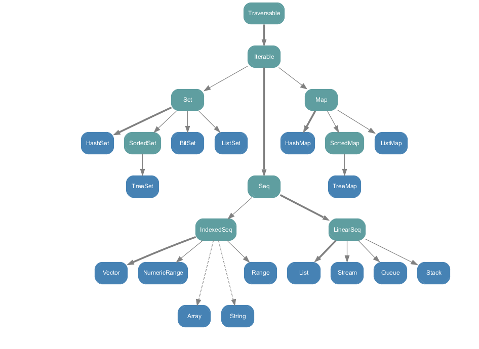

Dans Scala
Introduction of the Scala language
And overview of Play! Framework
What did you say?
(Meh)
Introduction
Scala is:
A statically typed language
Strongly typed
Hybrid: Object / Functional
Enforce immutability
Running on the JVM
Compatible with Java libraries
First:
Knowing you better
What language are you using?
{
"labels": ["Java","Scala","Clojure",".Net","Ruby","Python","Javascript",
"PHP", "other"],
"datasets": [
{
"fillColor": "rgba(220,220,220,0.5)",
"strokeColor": "rgba(220,220,220,1)",
"data": [65,59,90,81,56,55,2]
}
]
}
Do you prefer static typing or dynamic?
[
{
"label": "Static",
"value": 30,
"color":"#009966"
},
{
"label": "Dynamic",
"value" : 50,
"color" : "#0000CC"
}
]
Are you familiar with the concept of functional programing?
[
{
"label": "Yes",
"value": 30,
"color":"#009966"
},
{
"label": "No",
"value" : 50,
"color" : "#CC0033"
}
]
Why using Scala?
quiz match {case "Static" =>}
Guys.
Dynamic languages are not dirty.
It's a trade off between runtime flexibility and compile time safety.
Scala will let you start in your comfort zone and will progressively bring more powerful tools and syntactic sugar.
Why using Scala?
quiz match {case "Dynamic" =>}
Guys.
Static languages are not dirty.
It's a trade off between runtime flexibility and compile time safety.
Scala provide enough syntactic sugar to accept the type system and open the door to the Java ecosystem.
Try it
Love it
But don't forget
(With great power...)
A bit of history
(Martin Odersky in "The Shining")
(I'm super afraid of this guy)
- [1995] Martin Odersky start working on Pizza. A functional language that compile to Java bytecodes (With Generics and other delicacies)
- [1998] This work leads to the GJ compiler (Generic Java) which become the default compiler in Java 1.3
- [1999] Odersky join the EPFL, School of Engineering of Lausanne. Where he still is (I think)
- [2000] His quest for a functional language continue with Funnel. But it's more like a pure academic experiment
- [2001] The first lines of Scala are being written
- [2003] First official release
- [2005] Martin Odersky's Generics are finally released in Java 5 (dude)
- [2006] Major refactoring of the language
- [2011] Martin Odersky found Typesafe Inc. A company to support and promote Scala. Digesting the frameworks Akka and Play!
It's not hipster anymore!
Scala is here to stay

So let's begin
The blue pill
A world of objects
Everything is expression
// Executed immediately and assign to an immutable variable
val storyTeller: String = "Steven Moffat"
// Define a method. Executed when called
// = means the method return a value
def watch(season: Int): String = {
"The season " + season + " is so lame"
}
// Or in one line
def watch(): String = ("My favourite season is " + bestSeason)
// Executed first time we call it
lazy val bestSeason: Int = 6
// Executed now but assign a mutable variable
// Can use blocks as well
var xman: String = {
"Wolv" + "erine"
}
xman = watch(8)
Type inference
// Will be a String
val storyTeller = "Steven"
// Can't infer the Integer but can deduce the return type
def watch(season: Int) = {
"The season " + season + " is so lame"
}
Simple classes
// Feeling like home
class Doctor(n: String) {
var name: String = n
def setName(name: String) {
this.name = name
}
def getName() = {
this.name
}
override def toString(): String = "My name is " + name;
}
Case classes
(Power is coming)
// Comes with default constructors, equals, hash code, accessors, and much more
case class Doctor(name: String, number: Int)
Object
// Convenient way to create a singleton
object Rory {
def status() = "Roman"
}
Rory.status()
Traits
// Like interface but can contain implementation
// Allow multi inheritance
trait Ginger {
def hairColor() = "Red"
}
trait Baby {
def hasBaby() = true
}
class Amy(name: String) extends Ginger with Pregnant
Generics
case class Doctor()
case class Companion()
class Tardis[T](pilot: T) {
def contains() = (pilot.getClass())
}
Collections
List, Set, Map, etc...
// We have the standard things we got in Java
val mainList = List(3, 2, 1)
val map = Map(1 -> "one", 2 -> "two", 3 -> "three")
// Choice between Immutable and Mutable collections
// Immutable by default
import scala.collection.immutable.List
import scala.collection.mutable.List
// The collection API of Scala is very powerful
mainList.head
mainList.tail
mainList.count
mainList.contains(2)
//...
//More about this later
ALL THE TYPES !
Range
// Lazy loaded range of values
(1 to 1000).toList
5 to 14 by 3
1 until 5
Pattern Matching

Not just a Switch statement
// The most powerful aspect of Scala
x match {
case "River" => println("Found River")
case Doctor(name) => println("Found " + name + " as the Doctor")
case Companion("Sarah", _, "Smith") => println("Found Sarah Jane Smith")
case "Rory" | "Amy" => println("Found Rory or Amy")
case x: Int if x > 5 => println("Found an Integer greater than 5")
case hartnell :: smith :: Nil => println("Found the first, the last")
case hartnell :: other => println("Found the first doctor and the others")
case x => println("Found anything else")
}
The red pill
It's a monad if you can flatMap zat sh**
Higher Order functions
// Functions are just objects
def blink(didYou: Boolean): String = didYou match {
case true => "You're dead"
case false => "Everything is fine"
}
def dont(move: Boolean => String, didYou: Boolean) = move(didYou)
dont(blink, false)
Closures
// argument: Type => result
// The rocket define a function
val name = "Captain Baker"
dont({ didYou: Boolean =>
didYou match {
case true => "You're dead " + name
case false => "Everything is fine " + name
}
}, true)
Collection API full of that
// Scala relies a lot on Higher Order Functions
// The collection API is a very good example
val monsters = List("Silence", "Vashta Nerada", "Daleks", "Cybermen")
monsters.map({ name: String => name.toUpperCase })
// Syntactic Sugar
// '_' is the great wildcard of Scala
monsters.map(_.toUpperCase)
Options (call me maybe)
// An Option can be something or not
// The solution to avoid NullPointerException
trait Gender
case class Female() extends Gender
case class Male() extends Gender
val nextDoctor: Option[Gender] = None
// Easily matchable
nextDoctor match {
case None => "None defined yet"
case Some(x) => "The next doctor is a: " + x.getClass()
}
// Returning a default value
match.getOrElse(Female())
// You can use Map as well
val clara: Option[String] = None
clara.map(_.toUpperCase)
Partial Application
// You can make functions that return functions
case class Tardis()
case class Doctor()
def fly(t: Tardis)(d: Doctor) = { "Geronimo" }
val flyATardis = fly(Tardis())_
flyATardis(Doctor())
What else?
Not covered here
More on collections (flatMap, Parallel), Tuple
For comprehensions
Implicits
Actors (And Akka)
Futures
Streams
Covariance / Contravariance
Macros
Some negative points
Binary compatibility
Slowwww Compiler
Let's talk about tools
But first...
The French joke
(I will snail it)
In this case
=> Dans ce cas là
=> Dans s'cas là
=> Dans scala
In this case (dans scala), it's not possible
Are you kidding, of course it's possible in Scala !
Introducing:
Play! Framework

A full stack framework
For Java and Scala
Rely on SBT
Using Netty server (Non-blocking I/O)
Stateful architecture
Typesafe Database Integration
Migrations
Testing layers provided (Fluentlenium for integration)
Templating via Scalate
Integrate an REPL
Compatible with IntelliJ / Eclipse / ... VIM
Supported in Heroku, Travis, NewRelic
...
Quick example
Asynchronous call
Me
- Aurélien Thieriot
@athieriot